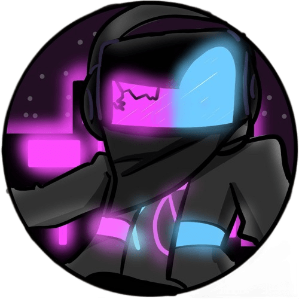

Meu nome é Arthur Santos, fã de video-games e fascinado por tecnologia; Programador com experiência em HTML, CSS, JavaScript, TypeScript e Python; Meu primeiro contato com programação foi aos 14 anos, porém só comecei a focar nessa área aos 16 anos, quando entrei para o curso de Informática Para Internet na FIEB